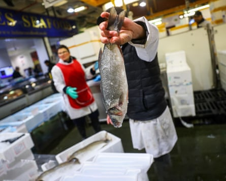
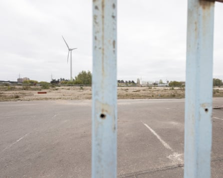

Smithfield and Billingsgate food markets in London will be turned into new homes and a cultural destination under plans by their owner – but the future of the meat and fish traders housed on each site remains in doubt.
A council within the City of London Corporation, which is responsible for running the capital’s Square Mile, has voted to task a team to oversee the regeneration of 28 hectares (70 acres) of land across Greater London. However, it has not allocated any new money for the project.
The corporation decided in a separate vote last November to permanently close Smithfield and Billingsgate when it pulled the plug on a planned £740m relocation to a new site in the east of the capital at Dagenham, blaming rising costs.
The markets will continue trading in their current locations until 2028, but the closure will mark an end to centuries of meat and fish trading in the city.
The corporation, which is exceptionally wealthy compared with typical UK local authorities, has faced a backlash over the decision and objections to the plans to permanently close London’s ancient food markets and build on the sites.
The corporation has previously offered compensation to Smithfield and Billingsgate traders and said it would help individual businesses to find new locations, but the newly created team will also be tasked with helping to find a new site for the meat and fish markets.
Chris Hayward, the corporation’s policy chair, said: “A bright future lies ahead for these markets, and their redevelopment will contribute billions of pounds in economic growth, thousands of new jobs and thousands of new homes.”
The redevelopment of the Smithfield and Billingsgate sites will add £9.1bn in gross value added (GVA) to the UK economy in the coming years, according to the corporation’s calculations.
The history of a food market around Smithfield – close to Farringdon train station – goes back more than 800 years.
The London Museum is in the process of moving to part of the site. The corporation wants the new team, which will mostly include current corporation staff, to oversee a masterplan for the remainder of the site and its Victorian listed buildings, which will aim to turn it into a cultural hub, potentially housing bars, restaurants and venues.
Greg Lawrence, the chair of traders at Smithfield market, who has worked on the site since he joined at the age of 16 in 1966, said: “Smithfield market is a very special place. It will be emotional to leave the site, it has been people’s lives.”
Despite this, he is in favour of the markets moving to a new, modern location. “We have outgrown it now, there is no room for anyone to expand or grow,” he said.
The site of Billingsgate fish market has been has been earmarked for housing.Photograph: Bloomberg/Getty Images
The 5.6-hectare Billingsgate site close to the Canary Wharf financial district has been earmarked for housing, and the corporation believes 4,000 new homes could be built there.
The corporation’s new team, which will comprise 11 members, will also be responsible for working with local representatives to work out how to redevelop the 17-hectare site at Dagenham Dock, in one of London’s most deprived boroughs, where it had intended to build a new market complex.
The corporation spent just under £230m of the project’s £741m cost before it cancelled the Dagenham move late last year, including buying and cleaning up the site. It blamed inflation and rising construction costs for the decision.
It will use the remaining £511m to fund other major projects including a law court complex it is building for the Ministry of Justice at Salisbury Square, which the Guardian understands is over budget.
The corporation manages assets worth billions of pounds , and collects £1.3bn in business rates annually, most of which it passes to central government.
The site in Dagenham to which the markets were intended to move before the plan was cancelled last year.Photograph: Graeme Robertson/The Guardian
While the corporation is the owner and operator of the Smithfield and Billingsgate sites, it does not have the power to autonomously close them down and use the land for other purposes. The capital’s ancient markets were established by acts of parliament and can only be shut when parliament passes a private bill .
This process has been complicated by the objection of three fishmongers from Ridley Road market in east London, who say they depend on Billingsgate for their business and will go bust if it closes down. They say they have the support of a small group of MPs who are opposed to the closure.
Alicia Weston, the founder of the food poverty charity Bags of Taste and a spokesperson for the fishmongers, said the new plans appeared to be “a positive move towards what the fishmongers have always wanted. They have asked for a suitable replacement for Billingsgate to be up and running before the closure, so they can go and buy their fish every day.”